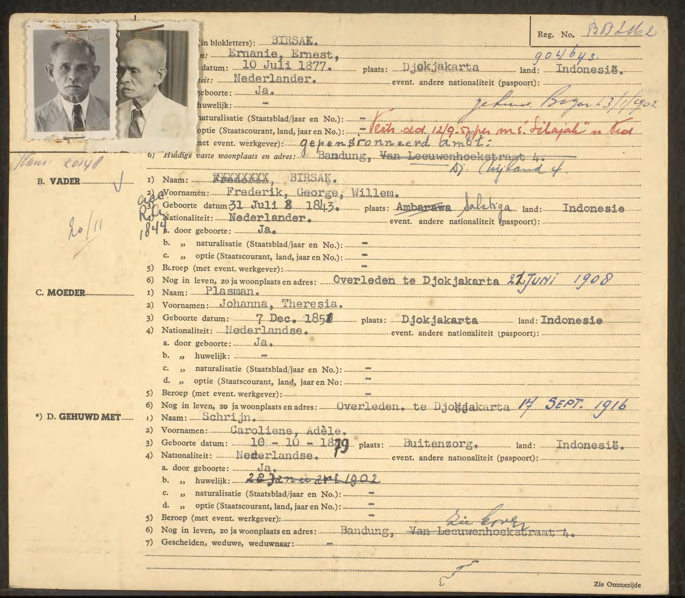
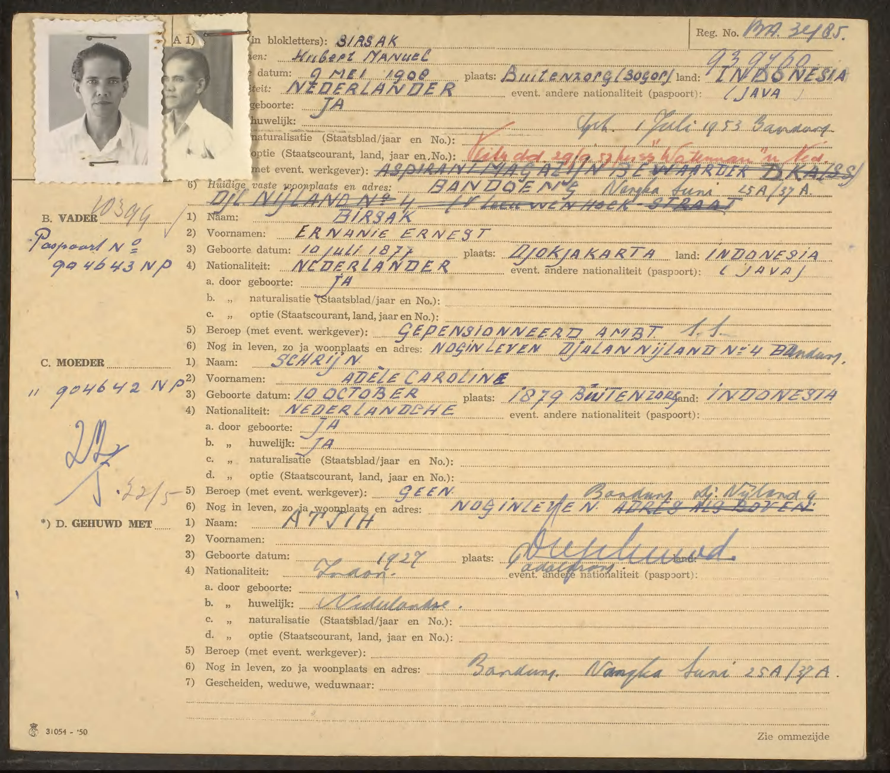
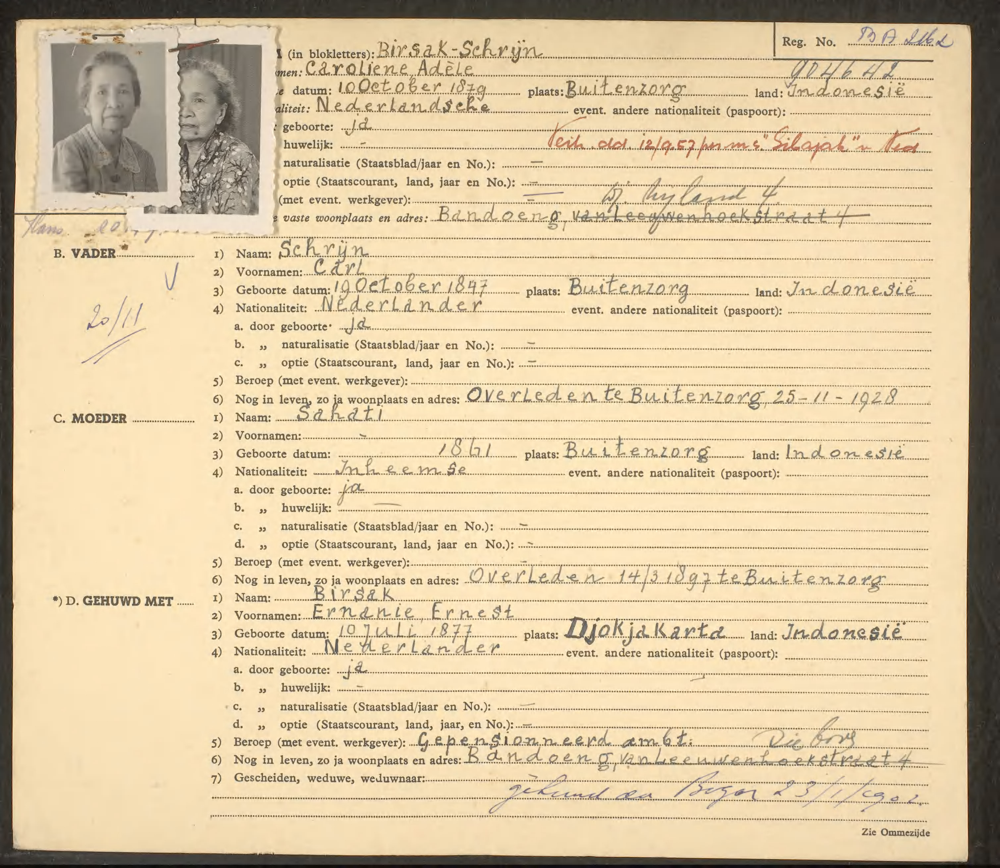
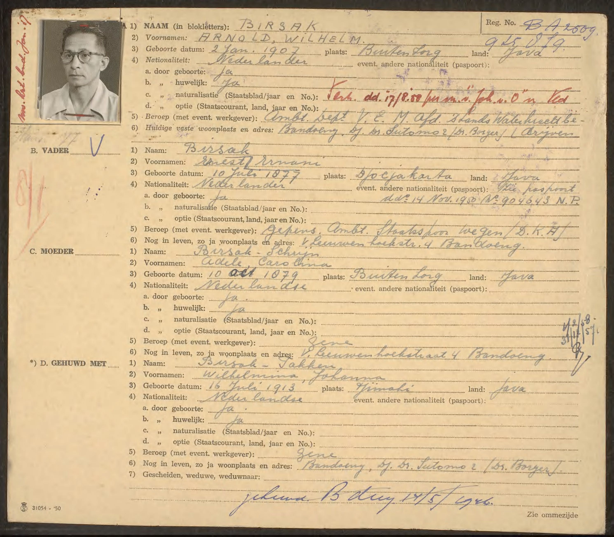
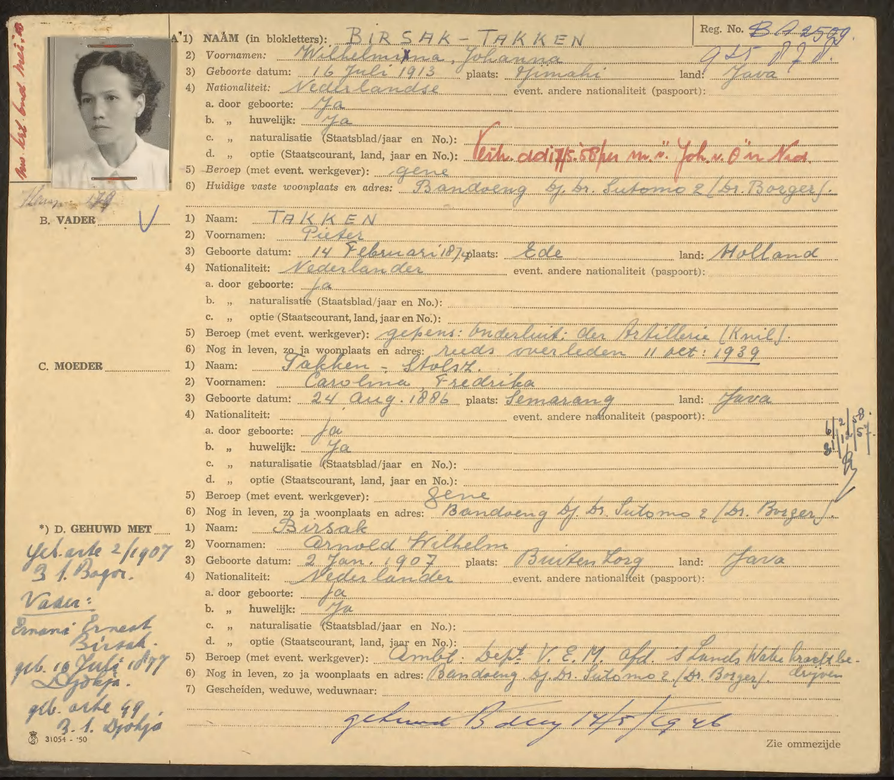
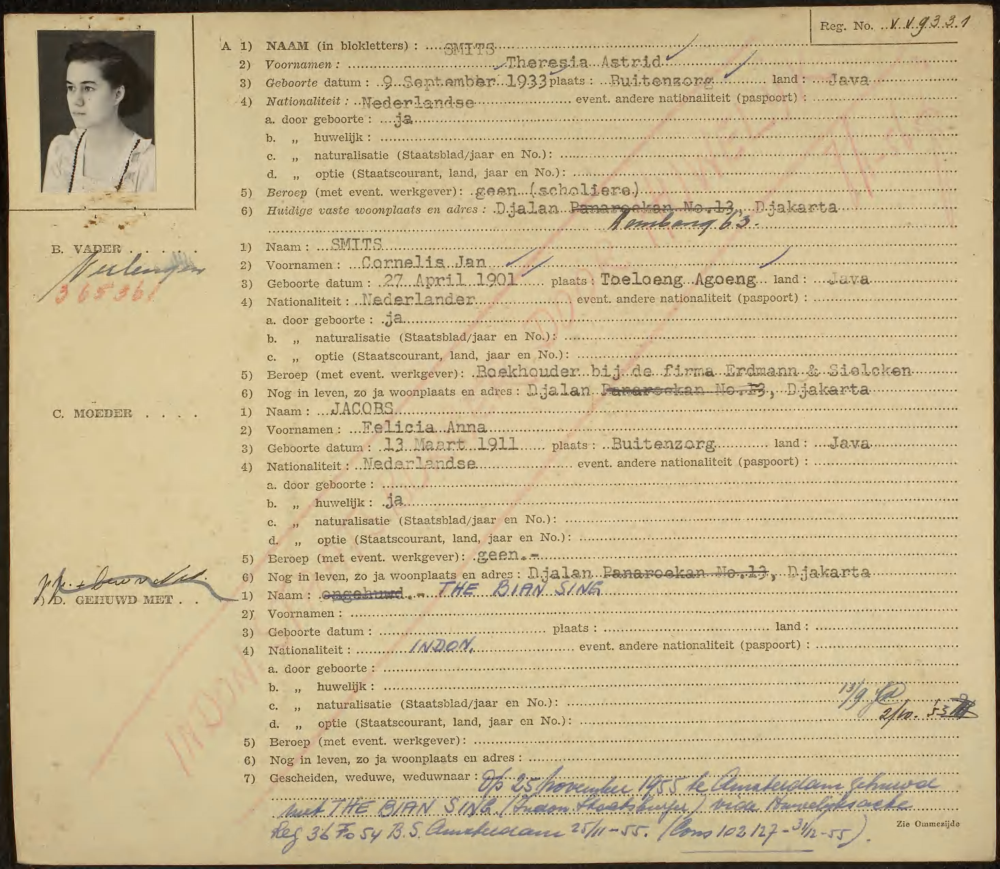

Oudere generatie · CBG-scan B13323 · paspoortkaart 904643
Ernanie Ernest Birsak
Directe kaartlezing · hogeresolutie-CBG-scan B13323

Personen, portretten en originele aanvragen in één geordend register. De portretweergave is een uitsnede in de pagina; de volledige, ongewijzigde scan blijft direct eronder aanklikbaar. Klik op een document om het originele bestand op volledige resolutie te openen.
Dit register brengt de persoonsinformatie uit de paspoortaanvragen samen. De persoonskaarten en de volledige scan blijven afzonderlijk herkenbaar: één aanvraag kan gegevens en portretten van meer dan één persoon bevatten.
Directe kaartlezing · hogeresolutie-CBG-scan B13323

Familiekoppeling bevestigd · originele hogeresolutie-scan

Eigen paspoortkaart · directe kaartlezing B13311

Eigen paspoortkaart · directe kaartlezing S18895

Eigen paspoortkaart · directe kaartlezing S19075

Persoonskoppeling op basis van directe kaartlezing · familievelden gecontroleerd

CBG-persoonskoppeling · scan aanwezig

Huwelijks-/familiekoppeling ondersteund door twee afzonderlijke bronnen · geen eigen paspoortkaart aan haar toegeschreven
Rechtstreeks vermeld op B13323 · geen zelfstandige paspoortkaart toegeschreven
Naamlezing voorlopig · scanidentificatie nog niet bevestigd
Kandidaat · bronlezing en verwantschap controleren
Kandidaat · niet gelijkgesteld aan militaire naamgenoot
Twee persoonsvermeldingen · originele kaartkoppeling nog controleren
Deze scans zijn nog niet betrouwbaar aan een persoon gekoppeld. De geïdentificeerde kaarten B13311, S18895 en S19075 zijn hierboven bij de betreffende personen opgenomen.

Persoon nog niet vastgesteld

Persoon nog niet vastgesteld

Persoon nog niet vastgesteld

Persoon nog niet vastgesteld

Persoon nog niet vastgesteld

Persoon nog niet vastgesteld

Persoon nog niet vastgesteld

Persoon nog niet vastgesteld

Persoon nog niet vastgesteld
Broninventaris: CBG-scanmanifest · Genealogisch dossier Familie Birsak · CBG-publicatievoorwaarden.